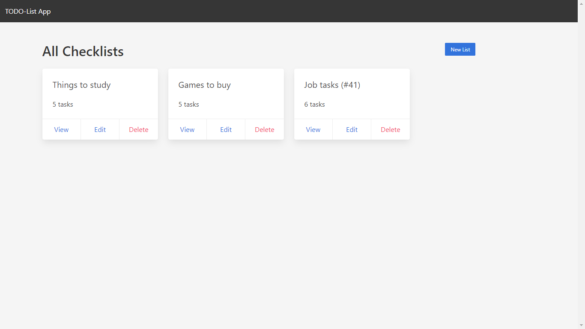

Javascript Notes
Aplicação web de anotações inspirada no Evernote desenvolvida com Node, MongoDB e React. Projeto de conclusão do curso Programador Fullstack Javascript da OneBitCode.

Olá! Me chamo Isaac, sou um programador e webdesigner freelancer. Trabalho com criação de sites e aplicações web utilizando tecnologias como PHP e React.
Sou formado em Sistemas de Informação e atuo principalmente como desenvolvedor freelancer criando sites institucionais, blogs, lojas virtuais e aplicações web. Além disso, também trabalho com implantação, manutenção e atualização de sites e consultoria. E aí, vamos começar um projeto incrível juntos?

Desenvolvimento de sites e interfaces modernos, acessíveis e que funcionam em todos os dispositivos, desenho e construção de páginas web com precisão e fidelidade.

Desenvolvimento de APIs Rest e aplicações full-stack, configuração de servidores e bancos de dados, hospedagem, manutenção e atualização de sites e servidores web.

Treinamento no uso de ferramentas e tecnologias para desenvolvedores e usuários finais, recomendações técnicas e soluções para empresas e empreendedores individuais.
Trabalho individualmente ou em equipe em projetos de todos os tamanhos escrevendo código limpo.
Construo interfaces responsivas e amigáveis, sempre com foco em gerar uma boa experiência de usuário.
Utilizo tecnologias validadas por grandes empresas e sempre de forma estável, segura e atualizada.
Busco constantemente aperfeiçoar minhas habilidades e aplicá-las em projetos cada vez maiores.
Aplicação web de anotações inspirada no Evernote desenvolvida com Node, MongoDB e React. Projeto de conclusão do curso Programador Fullstack Javascript da OneBitCode.

Aplicação web de listas de tarefas desenvolvida utilizando Node, Express, EJS e MongoDB. Projeto desenvolvido durante o curso Programador Fullstack Javascript da OneBitCode.

Site institucional com blog para uma empresa de ecoturismo e treinamentos do segmento de meio ambiente. Conta com tema customizado utilizando o WordPress CMS.